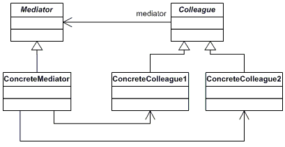

Mediator
Behavioral design pattern
by Leshkevich Anastasiia
Intro
Mediator is a behavioral design pattern that lets you reduce chaotic dependencies between objects. The pattern restricts direct communications between the objects and forces them to collaborate only via a mediator object.

Problem
We want to design reusable components, but dependencies between the potentially reusable pieces demonstrates the "spaghetti code" phenomenon.
Analogy
Solution
The mediator object: encapsulates all interconnections, acts as the hub of communication, is responsible for controlling and coordinating the interactions of its clients, and promotes loose coupling by keeping objects from referring to each other explicitly.

Structure

Example
from __future__ import annotations
from abc import ABC
class Mediator(ABC):
def notify(self, sender: object, event: str) -> None:
pass
class ConcreteMediator(Mediator):
def __init__(self, component1: Component1, component2: Component2) -> None:
self._component1 = component1
self._component1.mediator = self
self._component2 = component2
self._component2.mediator = self
def notify(self, sender: object, event: str) -> None:
if event == "A":
print("Mediator reacts on A and triggers following operations:")
self._component2.do_c()
elif event == "D":
print("Mediator reacts on D and triggers following operations:")
self._component1.do_b()
self._component2.do_c()
class BaseComponent:
def __init__(self, mediator: Mediator = None) -> None:
self._mediator = mediator
@property
def mediator(self) -> Mediator:
return self._mediator
@mediator.setter
def mediator(self, mediator: Mediator) -> None:
self._mediator = mediator
class Component1(BaseComponent):
def do_a(self) -> None:
print("Component 1 does A.")
self.mediator.notify(self, "A")
def do_b(self) -> None:
print("Component 1 does B.")
self.mediator.notify(self, "B")
class Component2(BaseComponent):
def do_c(self) -> None:
print("Component 2 does C.")
self.mediator.notify(self, "C")
def do_d(self) -> None:
print("Component 2 does D.")
self.mediator.notify(self, "D")
if __name__ == "__main__":
c1 = Component1()
c2 = Component2()
mediator = ConcreteMediator(c1, c2)
print("Client triggers operation A.")
c1.do_a()
print("\n", end="")
print("Client triggers operation D.")
c2.do_d()
"""
OUTPUT
Client triggers operation A.
Component 1 does A.
Mediator reacts on A and triggers following operations:
Component 2 does C.
Client triggers operation D.
Component 2 does D.
Mediator reacts on D and triggers following operations:
Component 1 does B.
Component 2 does C.
"""
Applicability
-
It’s hard to change some of the classes
because they are tightly coupled to a bunch of other classes.
-
You can’t reuse a component in a different program
because it’s too dependent on other components.
-
You find yourself creating tons of component subclasses
just to reuse some basic behavior in various contexts